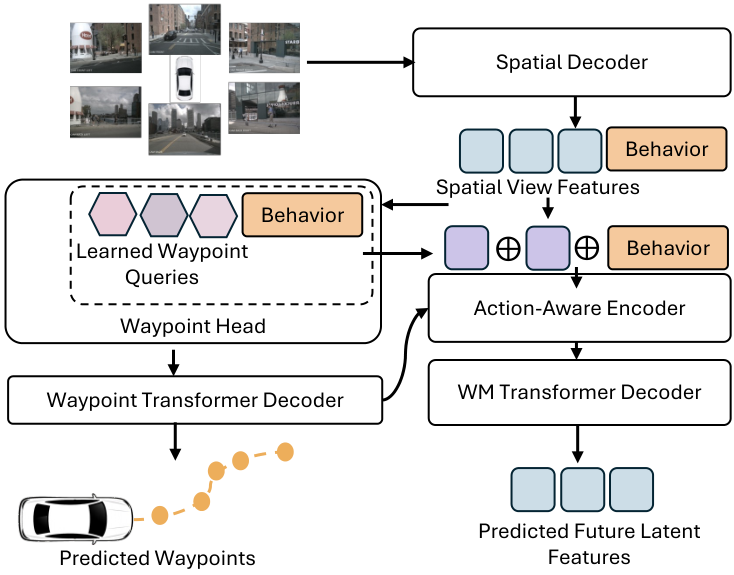
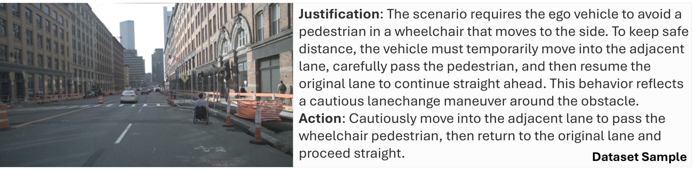
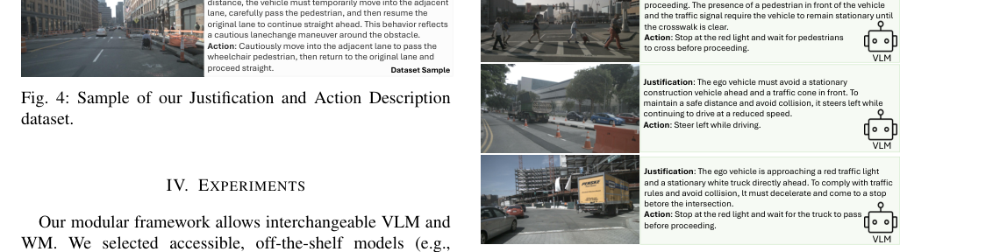

WorldVLM
简单摘要
最近作为自动驾驶的自我运动预测器和基础模型进行了探索，它们代表了解决该领域关键挑战的有希望的方向。为了利用基于上下文的决策和预测的互补优势，我们提出 WorldVLM。

在高度动态的环境中，自动驾驶是一个特别具有挑战性的问题，特别是在交通场景复杂、车辆和车辆等众多交互主体为特征的城市地区。虽然基于 VLM 的架构在驾驶任务上显示出显着的效果，但它们对 2D 图像数据的预训练从根本上限制了它们的空间推理能力。
核心创新
第一个关键新意是：最近作为自动驾驶的自我运动预测器和基础模型进行了探索，它们代表了解决该领域关键挑战的有希望的方向。这部分不是单独的小修小补，而是在原论文方法链路里承担了明确作用。
第二个关键新意是：为了利用基于上下文的决策和预测的互补优势，我们提出 WorldVLM。这部分不是单独的小修小补，而是在原论文方法链路里承担了明确作用。
第四个关键新意是：我们的关键创新是使用此机动命令来调节现成的 WM (LAW )。这部分不是单独的小修小补，而是在原论文方法链路里承担了明确作用。
技术细节
我们的关键创新是使用此机动命令来调节现成的 WM (LAW )。VLM 和调节机制详述如下。我们在章节中进行了消融，比较了场景重建时使用和不使用附加行为串联的条件反射。
3.1 行为规划VLM
在我们提出的框架中，VLM 充当高级行为规划器。它接收当前时间步长的单个前视图图像，以及 nuScenes 导航指令（左转、右转、直行）和当前时间范围的自我速度信息。
$$ v=\frac{d}{30}, $$
这条式子是在定义一个可直接计算的中间量：右侧把相对位置、方向、权重或比例关系组合起来，左侧则把这个组合结果记成后续模块要反复使用的变量。
$$ \alpha=\frac{\operatorname{atan2}(\Delta p_y,\Delta p_x)+\pi}{2\pi}-0.75, $$
放在“方法”这一部分看，它重点在定义或约束 alpha 这一项。这条式子是在定义一个可直接计算的中间量：右侧把相对位置、方向、权重或比例关系组合起来，左侧则把这个组合结果记成后续模块要反复使用的变量。
$$ \ell_{\text{behavior}}=\operatorname{MSE}(\hat{\alpha},\alpha)+\operatorname{MSE}(\hat{v},v), $$
放在“方法”这一部分看，它重点在定义或约束 ell behavior 这一项。这条式子是在定义一个可直接计算的中间量：右侧把相对位置、方向、权重或比例关系组合起来，左侧则把这个组合结果记成后续模块要反复使用的变量。
$$ \ell_{\text{text}} = -\frac{1}{T-1}\sum_{t=1}^{T-1}\log p_{\theta}(y_{t+1}\mid y_{\le t},x) $$
放在“方法”这一部分看，它重点在定义或约束 ell text 这一项。这条式子描述了多个分量的聚合或逐步合成过程。它通常表示模型如何把局部贡献、概率权重或多项损失累积成最终结果。
$$ \ell=\ell_{\text{behavior}}+\ell_{\text{text}}. $$
放在“方法”这一部分看，它重点在定义或约束 ell 这一项。这条式子是在定义一个可直接计算的中间量：右侧把相对位置、方向、权重或比例关系组合起来，左侧则把这个组合结果记成后续模块要反复使用的变量。
3.2 轨迹预测世界模型
作为 WM，我们采用 LAW，这是一种潜在的动作感知预测模型，可以从多视图图像表示中联合预测以自我为中心的路径点和未来的视觉特征。如图所示，行为调节在两个点注入。我们在章节中进行了消融，比较了场景重建时使用和不使用附加行为串联的条件反射。

实验结论
实验部分主要围绕 为了进行基线比较，我们评估了一个无条件的 LAW 变体，其中“无行为”，有效地对额外的 8 个行为组件进行零填充 展开。结果表明，为了评估推理输出的质量，我们使用既定的 NLP 指标 BLEU 和 ROUGE。
4.1 设置
实验部分主要围绕 为了进行基线比较，我们评估了一个无条件的 LAW 变体，其中“无行为”，有效地对额外的 8 个行为组件进行零填充 展开。结果表明，由于源 VQA 数据集中缺乏语言注释，我们通过随机化场景 80%（22516 个样本）训练和 20% 验证（5615 个样本），从现有的训练分割中创建一个新的分割。
4.2 数据集和基准
实验部分主要围绕 我们通过组合 doScenes 场景级指令和 DriveLM 帧级 VQA 数据生成的动作合理性注释来扩展 nuScenes 展开。结果表明，DriveLM 为关键帧提供 QA 注释，捕获跨感知、预测、规划和行为类别的有意义的自我行为（变道、停止、开始）。


4.3 指标
实验部分主要围绕 对于开环评估，我们使用 nuScenes 评估指标 L2 误差（以米为单位）和碰撞率（以百分比为单位） 展开。结果表明，为了评估推理输出的质量，我们使用既定的 NLP 指标 BLEU 和 ROUGE。
4.4 训练
实验部分主要围绕 首先，我们训练 VLM 来生成调节 WM 的推理和结构化行为指令 展开。结果表明，其次，我们利用已发布的视觉编码器检查点进行条件训练 WM，以进行资源高效的解码器训练。
4.5 定性结果
实验部分主要围绕 推理图显示了使用我们在 nuScenes 上的理由-动作数据集注释进行训练的微调 VLM (LLaVA-Qwen1.5) 的代表性输出 展开。结果表明，在第一个示例中，模型正确检测到繁忙十字路口的行人，并证明停车动作的合理性。

4.6 定量结果
实验部分主要围绕 节中的定性分析显示，与零填充相比，交互式场景中 VRU 的屈服更为保守 展开。结果表明，我们将经过训练的 VLM 的 BERT、ROUGE 和 BLEU 分数与未经训练的基线进行比较。
| Model | Nav | L2 (m) | Collision (%) | ||||
|---|---|---|---|---|---|---|---|
| 1s ↓ | 2s ↓ | 3s ↓ | 1s ↓ | 2s ↓ | 3s ↓ | ||
| Baseline (LAW) | 0.31 | 0.61 | 1.02 | 0.10 | 0.14 | 0.44 | |
| No Behavior | 0.31 | 0.61 | 1.01 | 0.12 | 0.16 | 0.49 | |
| WorldVLM with Motion Vector | -- | 0.31 | 0.62 | 1.03 | 0.10 | 0.14 | 0.48 |
| Model | BERT (↑) | ROUGE (↑) | BLEU (↑) | ||||||
|---|---|---|---|---|---|---|---|---|---|
| F1 | P | R | 1 | 2 | L | 1 | 2 | 3 | |
| Qwen1.5-0.5B* | 0.54 | 0.64 | 0.52 | 0.09 | 0.03 | 0.07 | 0.04 | 0.02 | 0.03 |
| Qwen1.5-0.5B | 0.67 | 0.68 | 0.66 | 0.47 | 0.19 | 0.34 | 0.36 | 0.22 | 0.15 |
| Qwen1.5-0.5B^ | 0.67 | 0.68 | 0.66 | 0.47 | 0.19 | 0.34 | 0.36 | 0.22 | 0.15 |
| Qwen2-1.5B | 0.67 | 0.68 | 0.66 | 0.29 | 0.11 | 0.20 | 0.17 | 0.10 | 0.06 |
4.7 消融
实验部分主要围绕 我们评估（i）运动矢量，一种具有仅纵向和仅横向消融的连续信号（角度、航路点距离）和（ii）五个轨迹导出的离散单热编码标签的两种变体 展开。结果表明，(i) 没有导航指令的运动矢量实现了最佳的 L2（3 秒内为 28%）和碰撞率（3 秒内为 0.1%），与其提供有关目标航路点的最直接、低噪声信号相一致。
| Model | Nav | Concat | L2 (m) | Collision (%) | ||||
|---|---|---|---|---|---|---|---|---|
| 1s ↓ | 2s ↓ | 3s ↓ | 1s ↓ | 2s ↓ | 3s ↓ | |||
| Baseline (LAW) | 0.31 | 0.61 | 1.02 | 0.10 | 0.14 | 0.44 | ||
| No Behavior | 0.31 | 0.61 | 1.01 | 0.12 | 0.16 | 0.49 | ||
| Motion Vector | -- | 0.20 | 0.27 | 0.27 | 0.07 | 0.09 | 0.10 | |
| No Behavior | -- | 0.31 | 0.61 | 1.01 | 0.12 | 0.16 | 0.49 | |
| Motion Vector | -- | -- | 0.20 | 0.28 | 0.28 | 0.13 | 0.11 | 0.11 |
| Model | Nav | L2 (m) | Collision (%) | ||||
|---|---|---|---|---|---|---|---|
| 1s ↓ | 2s ↓ | 3s ↓ | 1s ↓ | 2s ↓ | 3s ↓ | ||
| Baseline (LAW) | 0.30 | 0.59 | 0.98 | 0.50 | 0.60 | 1.0 | |
| No Behavior | 0.35 | 0.67 | 1.09 | 0.10 | 0.16 | 0.51 | |
| Action (Nav x Speed) | -- | 0.40 | 0.74 | 1.19 | 0.10 | 0.35 | 0.97 |
| Action (Nav x Speed) | 0.33 | 0.62 | 1.0 | 0.07 | 0.17 | 0.39 | |
| Motion Vector | -- | 0.20 | 0.27 | 0.28 | 0.06 | 0.07 | 0.10 |
| Motion Vector | 0.22 | 0.31 | 0.38 | 0.34 | 0.29 | 0.33 | |
| Motion Vector angle only | -- | 0.37 | 0.72 | 1.18 | 0.06 | 0.19 | 0.60 |
| Motion Vector speed only | -- | 0.19 | 0.32 | 0.49 | 0.07 | 0.08 | 0.19 |
| Method | MAE angle ↓ | MAE speed ↓ |
|---|---|---|
| 1 BEH Token | 0.0463 | 0.1920 |
| 5 BEH Token | 0.0408 | 0.1992 |
| 10 BEH Token | 0.0416 | 0.1977 |
| Last 5 | 0.0508 | 0.5768 |
| Last 16 | 0.1257 | 0.2663 |
| First 8 | 0.0152 | 0.2566 |
| First 16 | 0.0135 | 0.1788 |
| First 16 1.5B | 0.0126 | 0.1810 |
| First 32 | 0.0165 | 0.2030 |
理解评价
如果把这篇论文放回问题背景里看，它真正的价值在于：最近作为自动驾驶的自我运动预测器和基础模型进行了探索，它们代表了解决该领域关键挑战的有希望的方向，特别是在保持动态预测的同时增强泛化。这说明作者不是只补一个局部模块，而是在重新组织问题该怎样被解决。
最能支撑这个判断的，还是实验给出的证据：为了利用基于上下文的决策和预测的互补优势，我们提出 WorldVLM。换句话说，这些设计并不只是概念上更完整，而是实实在在改变了最终结果。
当然，它离真正成熟的方案还有距离：当前方案的局限在于它仍然受制于计算资源、输入质量或场景复杂度，距离真正稳健的大规模部署还有差距。后续更值得继续推进的方向，是 未来继续提升效率、泛化能力以及在更复杂场景下的稳定性。